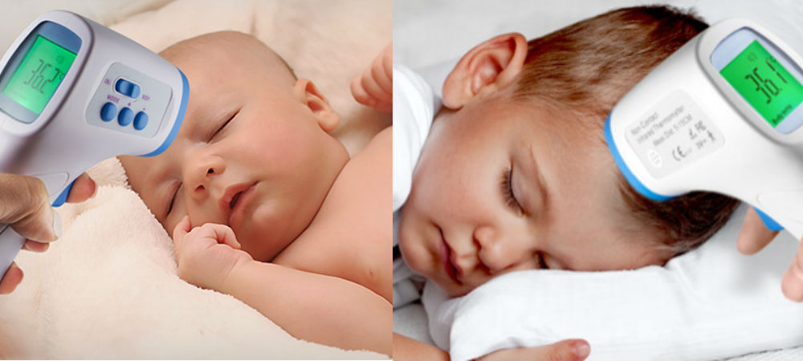
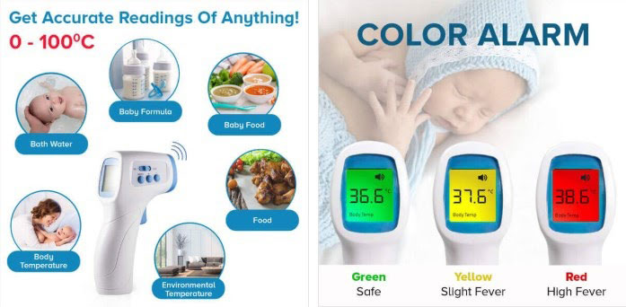

Advertorial
New Fever Heat-Sensor System Measures Body Temperature In Seconds – With ZERO Contact!
We’ve all read the latest news titles: “DANGEROUS NEW VIRAL MUTATIONS ARE TAKING THE WORLD BY STORM!”
This is not the common cold. It’s a dangerous new strain that can cause serious illness and even death. Some governments are trying to cover it up. But pandemics can’t stay hidden for long.
Prevention And Limited Exposure Are Good Ways To Protect Your Family
Fever-detecting heat sensors are at all airports. One symptom of the new virus could be elevated body temperature. Even before you show any other symptoms. So, all international travelers must be checked.
People who are sick might not even know it themselves.
Old flu shots do nothing against the new viruses. They are developing too fast for us to keep up. Prevention and recognizing potential symptoms are the key.
But Now, You Can Get The Same Temperature-Sensing Tech Used By Health Professionals And The Governments
FeverPatrol can monitor your entire family. You can check everybody’s temperature in just a few minutes. Get an “early warning” against new strains of flu and other viruses.
You Can Check Out The People You Come Into Contact With!
FeverPatrol is not there just for you and your family. Do you have a neighbor or a relative visiting? Do your children have playdates?
It’s super simple to screen them all! Readings take only a couple of seconds to detect fever or potential illness. FeverPatrol is super-fast & discreet.
What if somebody gets sick? FeverPatrol will help you track their viral signs. You can take action the moment their fever rises to dangerous levels.
Contact or oral thermometers spread germs through saliva, mucus, and perspiration. FeverPatrol measures temperatures with ZERO contact. It’s 100% accurate, sanitary, and convenient.
FeverPatrol Is A Simple, No-Touch Thermometer That Provides Accurate & Instant Temperature Sensing!
A touchless thermometer means no more inaccurate readings. FeverPatrol is gentle, accurate, and convenient. Perfect if your baby is constantly moving.
Just hold FeverPatrol in front of your baby’s forehead and press the button.
Precise results will appear in less than a second.
Here’s what I liked about this futuristic thermometer:
✅ Body & surface settings
✅ ZERO-contact temperature readings
✅ One-handed operation
✅ Easy to use
✅ Lightweight
✅ Digitally-designed
✅ Modern look
✅ Accurate instant results
✅ 100% money-back guarantee
FeverPatrol Is Perfect For Families With Young Kids
Sarah G., a mother of three, told us her story:
One day, my baby caught a bad cold, and she was crying, up all night, and had a fever.
The pediatrician told me there was nothing to worry about, but he asked me to monitor her temperature and call him if it started to rise.
The only thermometer I had was one of those old-fashioned glass ones that you had to shake and put in your mouth.
I couldn’t do that with the baby, so the only choice was to put it in her armpit, or use it rectally, which I absolutely didn’t want to do.
It made me nervous to take my child’s temperature. She started to cry and squirm around when I tried to take her temperature under her armpit.
I didn’t want to spread germs with the thermometer, so I sterilized the thermometer with alcohol each time I wanted to take her temperature.
It was even worse at night. Finally, after crying and sneezing, she would fall asleep, but I was worried that she was too hot, so I tried to take her temperature again after a few hours.
This immediately woke my baby up, and then it was another hour of crying before she went back to sleep. I was totally frustrated and exhausted
A Nurse Recommended This Wonderful Device
The next day, I called my pediatrician and spoke to the nurse. I told her about my problems with the old-fashioned thermometer.
“Oh my goodness!” she said. “Don’t you know about FeverPatrol ?”
“FeverPatrol?” I said, “No, what’s that?”
She told me that FeverPatrol was a super-accurate, easy-to-use non-contact thermometer.
She told me to come into the doctor’s office and they would lend me one to try.
I took my baby’s temperature several times during the day, and there was no squirming and crying.
And that night, I easily took her temperature while she was sleeping. She didn’t even know I was doing it, and of course, she didn’t wake up.
I had to get one. If you have kids or if you need a thermometer for yourself, this is fantastic!
I Bought My Own FeverPatrol Thermometer
When I returned FeverPatrol the next week (My baby was already 100% better!), I asked her where to get one. She searched on my phone and showed me the official website here, so I could order one for myself.
Here’s my experience:
- Shipping was fast and I got it in the mail sooner than I expected.
- It was so easy to use. I put in the batteries and it was ready to use in a few seconds.
- First, I took my own temperature with the old-fashioned oral thermometer, then I took it with the FeverPatrol. The FeverPatrol was 100% accurate.
- I was so happy. Now I had an accurate, professional thermometer.
Of course, I never wanted my kids to be sick, but I felt better knowing I was prepared for an emergency. And a few weeks later, my hubby had a cold, and he really liked the convenience of FeverPatrol too!
It is essential for every home!
FeverPatrol Gets Accurate Readings On Anything!
Germs can live for weeks on your old-fashioned contact thermometer. You might think you’re keeping your family safe, but you’re just carrying old germs into your baby’s mouth. GROSS!
With FeverPatrol touchless thermometer, this can never happen.
FeverPatrol Is On Sale This Week!
I’m buying another one and you should definitely use this opportunity too! I’m sure they’ll run out of stock fast. Believe me, you need one in your home this winter.
No-Touch Feature – You and your doctor can now take your little one’s temperature without any touching. This thermometer detects body temperature through infrared waves. It’s perfect for restless infants. Also, 100% hygienic.
Accurate Readings – Place FeverPatrol anywhere near your child’s body and get the same results as with old-fashioned thermometers, only faster. The digital reader can measure both internally (for fevers) and externally (for objects)
Different Modes – Set FeverPatrol to display Fahrenheit or Celsius scale. Make adjustments using the convenient side buttons.
One-Hand Operation – Just squeeze the handle and FeverPatrol is in scanning mode. It’s so simple, anyone in your home can use it.
Limited-Time Offer For Our Readers
(Very Limited Run – Please Check For Availability)
Order your own FeverPatrol no-touch thermometer now and get an exclusive 50% discount! These sell out fast so we suggest acting quickly.
How To Order Your FeverPatrol?
1. Click here to go to the official website and pay only $49.98.
2. Use your FeverPatrol to keep your family safe and healthy.
* Saturday August 22, 2020 Update:
Ever since FeverPatrol was featured on major international media, an incredible amount of buzz has been generated. Due to its popularity and positive reviews, the company is so confident in their product that they are now offering a one-time, first-time-buyer 50% discount.
* Special Offer Now - Only Available Through The Official Website - while supplies last.